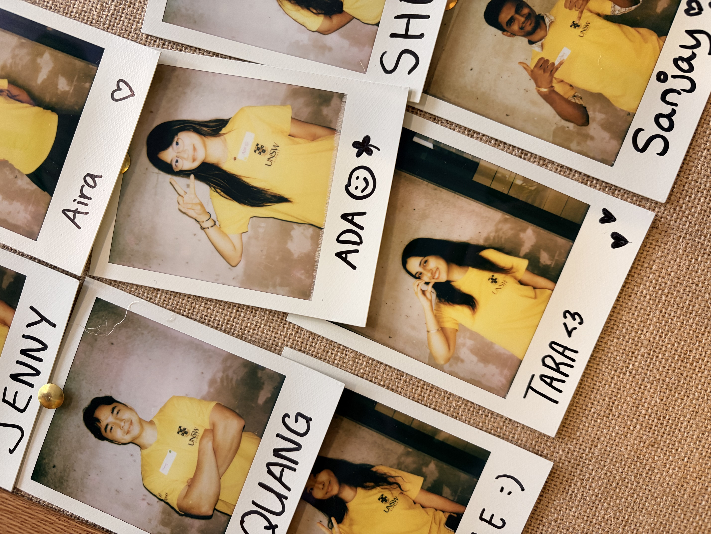
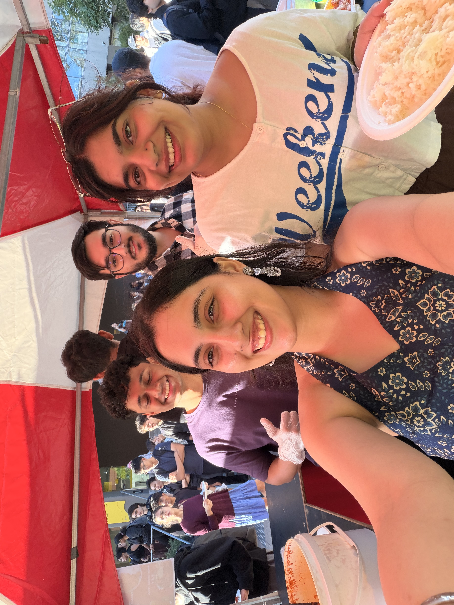
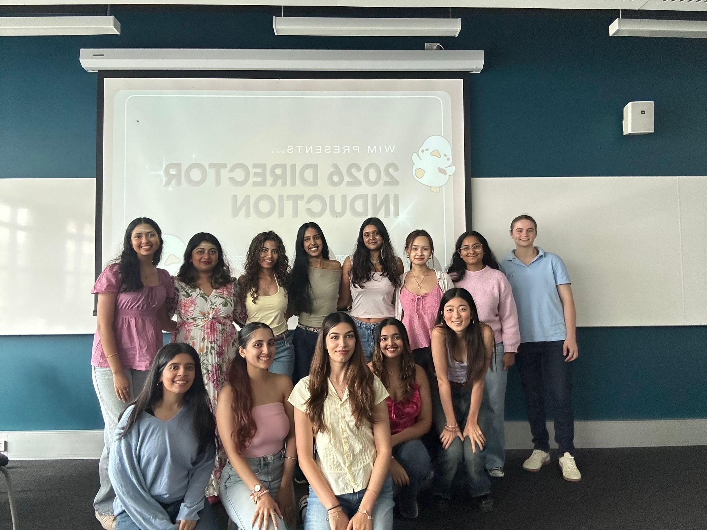
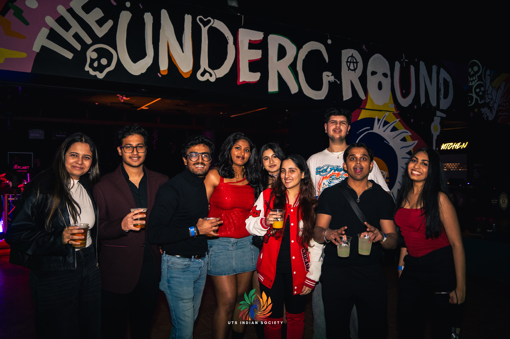
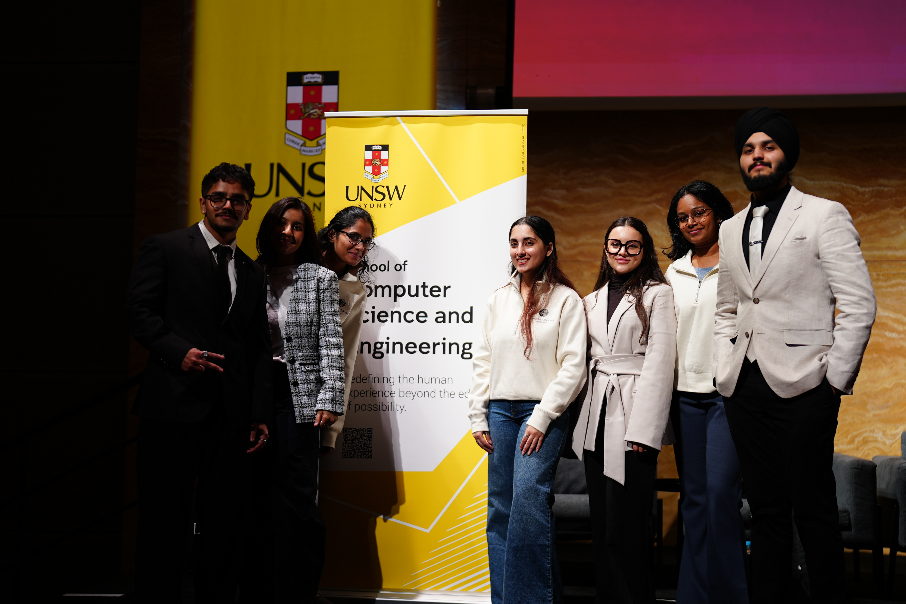
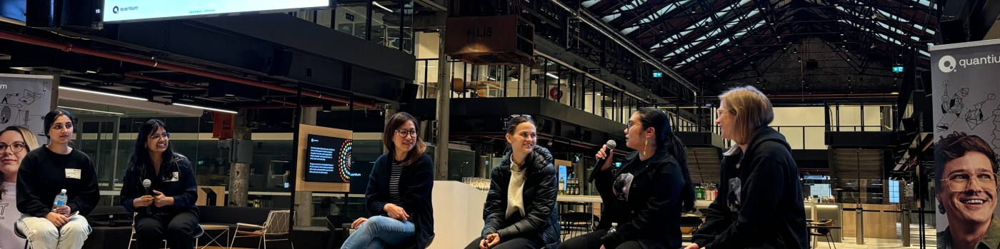
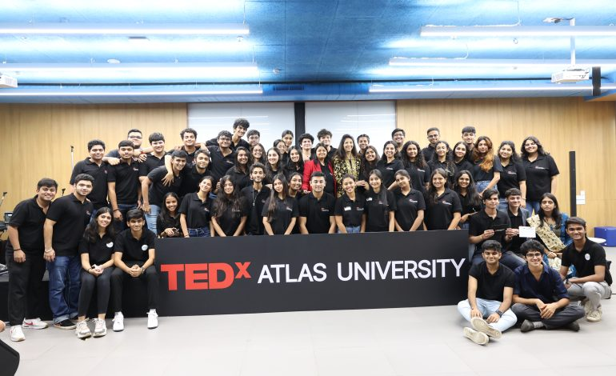

University Life & Leadership

Student Ambassador
UNSW Founders
2026
Promoting entrepreneurship and the startup ecosystem at UNSW.

Secretary
UNSW Indian Society
2026
Managing administrative operations for the cultural society.

Secretary
Women in Management Society
2026
Managing records and workflows for the management society.

Events Director
UTS Indian Society
Nov 2025 – April 2026
Planned and executed flagship events like the Desi Ball and harbour cruises.
Events Coordinator
UTS Indian Society
2025
Supported the execution of diverse cultural society events.

President
Artificial Intelligence Society (AISOC) UNSW
Dec 2024 – Oct 2025
I co-led and organized AICON, the best ever flagship event of AISOC, which had 200+ attendees.

Public Relations Director
Artificial Intelligence Society (AISOC) UNSW
2024
Led communication strategies and brand management for AISOC.

Careers Subcommittee
Women in Technology (WIT) UNSW
2024
Assisted in career-focused initiatives for women in the technology sector.

Vice Chairperson
TEDx ATLAS SkillTech University
Jan 2023 – Aug 2023
Co-led the organisation of the first independently organised TEDx event, "Lead with a Purpose".
In the News
The Sydney Morning Herald
Students are using AI apps to summarise whole books ↗
The Sydney Morning Herald
AI smashed the job prospects of Sydney students ↗
ATLAS SkillTech University